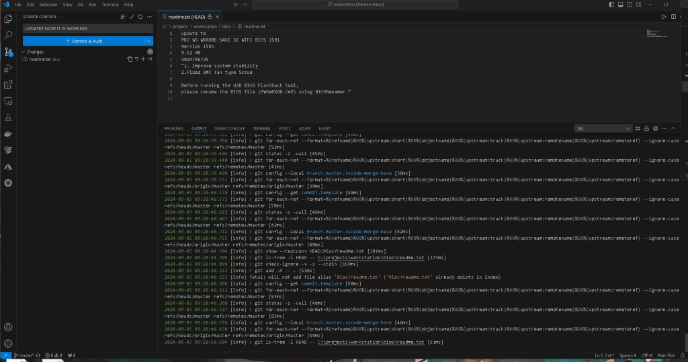
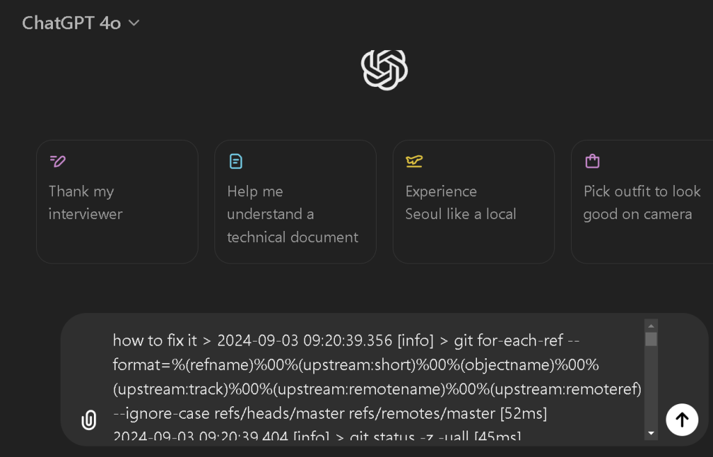
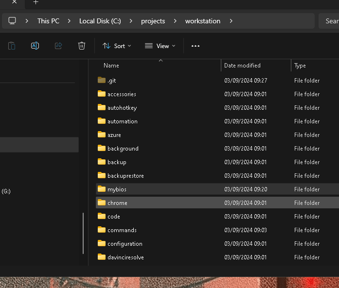
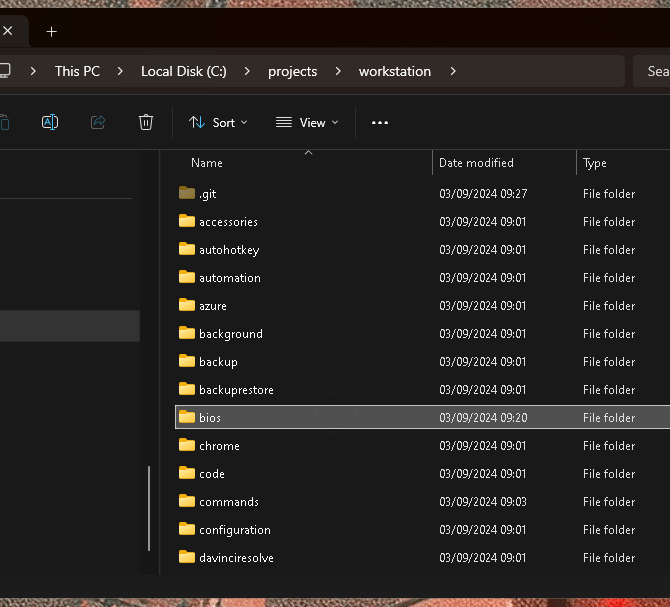
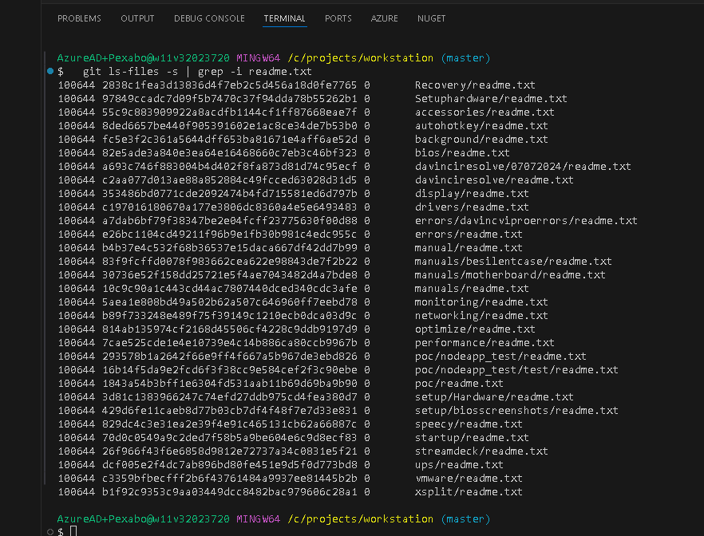
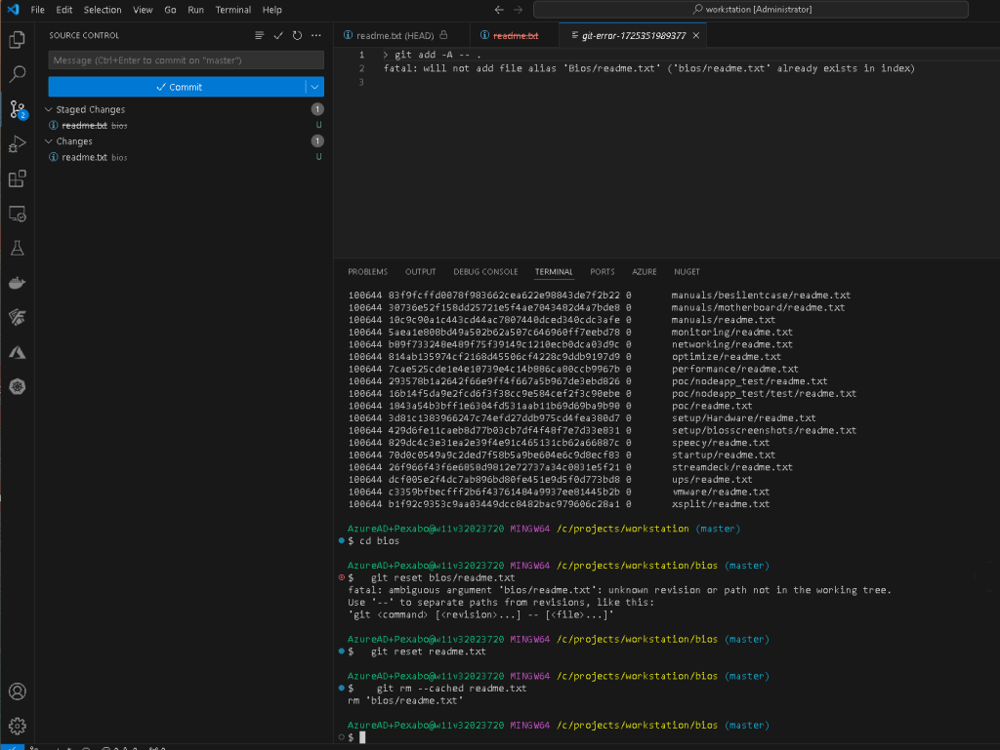
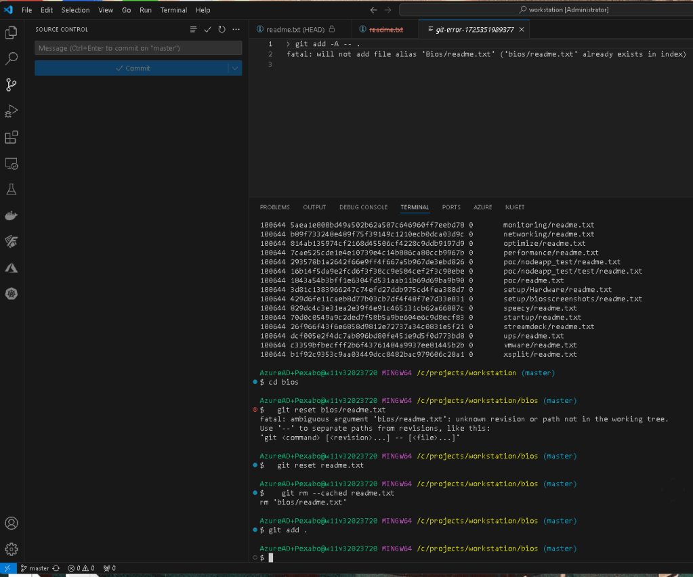

Git Errors Out And Cant Push

With log push

The error message you're encountering is:
fatal: will not add file alias 'Bios/readme.txt' ('bios/readme.txt' already exists in index)
Problem Explanation
Git is case-sensitive with filenames on some systems (like Linux) but not on others (like Windows or macOS, depending on the configuration). This error indicates that you have two files that Git sees as the same file due to case insensitivity: Bios/readme.txt and bios/readme.txt. This conflict happens because one of these filenames is already in the Git index (the staging area), and Git cannot add the other due to the case conflict.
Solution Steps
To resolve this issue, follow these steps:
- Determine the current state of the files in the index:
Run the following command to see what files are currently staged for commit:
git ls-files -i -s | grep -i readme.txt
- Unstage the conflicting files:
If you see bothBios/readme.txtandbios/readme.txtin the output, you need to unstage one of them. To unstage both, you can use:
git reset Bios/readme.txt
git reset bios/readme.txt
- Remove one of the conflicting files:
Decide which version of the file you want to keep. If you want to keepbios/readme.txt, for example, remove the other file:
git rm --cached Bios/readme.txt
Or, if you want to keep Bios/readme.txt, remove the other:
git rm --cached bios/readme.txt
- Commit the changes:
After resolving the case conflict, add the correct file to the index again if necessary:
git add bios/readme.txt
Or:
git add Bios/readme.txt
Then, commit the changes:
git commit -m "Fix case conflict with readme.txt file"
- Adjust Git settings for future case sensitivity issues (Optional):
If you're working on a team or environment where case sensitivity might frequently cause issues, you can adjust Git's configuration to handle case conflicts more gracefully:
git config core.ignorecase false
Note: Be cautious when changing this setting as it may have unintended consequences in environments where case sensitivity is expected.
By following these steps, you should be able to resolve the case conflict and successfully add the desired file to your Git repository.
**Faster solution **

now back to bios

if i did it the gpt way

Reset and remove the cached version

git adds the file

Imported from rifaterdemsahin.com · 2024